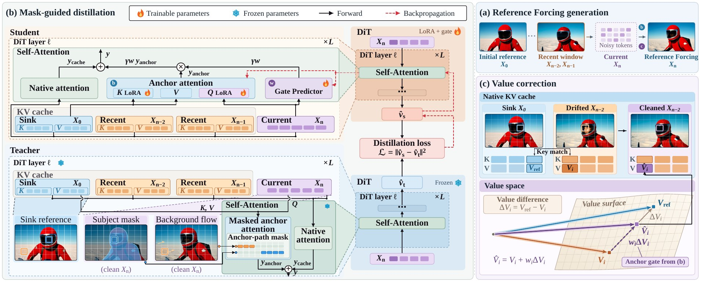

Long video generation should keep the subject and background consistent while supporting rich, natural motion. However, autoregressive models are often distilled with distribution matching distillation (DMD) over short windows, which does not train them to keep this consistency over long ranges. As a result, the subject and background can drift over time. Methods that manage the key-value (KV) cache retain or retrieve history to reduce drift. Yet this history may itself have drifted. We propose Reference Forcing, which uses the initial frames as an appearance reference. We first build a teacher that uses attention masks to force each region of a new frame to attend to the same region in the initial frames. The teacher finds these regions with off-the-shelf segmentation models. We then distill this behavior into a separate attention path of the student, which needs no external models at inference. We further introduce value correction, which corrects drifted values in the KV cache toward the matching values of drift-free initial frames. Experiments show that Reference Forcing achieves state-of-the-art subject and background consistency among long-video methods on different base models, and its advantage grows with video length.
Method
Reference Forcing uses the initial frames as an appearance reference and keeps all weights of LongLive frozen.
Anchor attention. Each self-attention layer gets an independent anchor path, which lets each token attend to the same content in the first chunk without changing the attention to the recent chunks. A learned anchor gate decides how much each token uses it, and closes for content that appears later.
Region-guided distillation. A teacher uses attention masks to force each region of a new frame to attend to the same region in the initial frames, found with off-the-shelf models: the subject with Grounding DINO and SAM 2, the background with optical flow. We distill this behavior into the anchor path of the student, which needs no external models at inference.
Value correction. The recent frames in the KV cache may already have drifted. Training-free value correction moves their cached values toward the matching values of the drift-free initial frames, weighted by the anchor gate, and keeps their keys.

Two-hour videos
Each video is generated in one pass, without restarts or stitching. Shown at 60× speed; the clock gives the time in the generated video.
0:00:00
Otter · An adorable happy otter stands on a surfboard wearing a yellow lifejacket, riding along turquoise tropical waters near lush tropical islands.
0:00:00
Tokyo walk · A stylish woman in a black leather jacket and a long red dress walks down a bustling Tokyo street filled with warm glowing neon.
0:00:00
Robot · A robot with sleek silver armor and glowing blue circuits explores a neon-lit cyberpunk city.
Comparison with long-video methods
60-second videos for the same prompt and initial noise. All methods are built on LongLive and use the same KV cache capacity of 12 latent frames.
More visualization results
60-second videos generated by Reference Forcing on LongLive, each in one pass. Scroll down for more; each video plays while it is on screen.
Playback speed
A playful scene of a brown dog walking through a lush green field carrying a small orange cat on its back.A playful kitten running and hopping through a lush green meadow filled with tall grass and wildflowers.A majestic prince and a graceful princess walk side by side in a grand castle courtyard.A majestic blue horse is walking gracefully across an open green meadow.A majestic African lion walking confidently through the vast golden savannah.A fluffy, beautiful white cat with soft fur and bright green eyes is gracefully walking across an orange background.A purple cow wearing a stylish top hat dances joyfully on the surface of the moon.A heartwarming video featuring a friendly golden retriever puppy climbing a scenic mountain trail.A beautiful Chinese young lady in traditional Hanfu is gracefully dancing along the riverbank.A beautiful brunette woman dressed in a vibrant yellow traditional dress is performing a lively folkloric dance.A cute, young lion cub walking through a savannah landscape, with tall grasses swaying gently in the breeze.A green screen scene featuring a CGI-generated lifelike lion walking confidently towards the camera.A cute, realistically rendered yellow rabbit hopping through a lush green meadow.A magical fantasy scene featuring a dog and a cat running together on top of calm, shimmering water.A cowboy-themed animated clip featuring a cat wearing a hat and boots, rolling on roller skates down a busy city street.A cute, grey mouse, reminiscent of Disney animation style, is running swiftly across a cozy living room.A cute, cheerful young girl with curly brown hair and rosy cheeks walking along a clean, picturesque country road during autumn.A beautiful young woman with flowing blonde hair walks confidently down a bustling city street.A serene, slow-motion video of a person walking in a peaceful forest.An elderly man with a cheerful expression, wearing casual clothes such as a light jacket and khakis, is walking along the edge of a serene lake.A large, majestic tiger is walking confidently along a dirt road, looking directly into the camera.A lone gray wolf with piercing yellow eyes and a bushy tail is walking steadily to the right on a green screen background.A young Chinese lady, wearing a light summer dress and flip-flops, is walking leisurely along the sandy beach while enjoying an ice cream cone.A solitary young woman walks along the edge of the sea during a beautiful sunset afternoon.A cute, domestic cat wearing a small red dress, walking gracefully across a cozy living room floor.A cute, fluffy rabbit running and jumping through dense bushes in a lush forest.A young boy, around 10 years old, is walking through a grassy field.A young boy, around 8 years old, is walking alone down a dirt road lined with tall trees on either side.A 4K video featuring a young woman walking through a heavy rainstorm.A young boy riding a bicycle down a winding mountain road.A vibrant scene set in front of the ancient Colosseum, featuring a tall giraffe with a spotted coat and long neck chasing after a large gray elephant.A playful sea lion leaps into the ocean from a rocky shore.A futuristic French girl stands in a modern, sleek swimming pool, her expression one of awe as she gazes at a supernatural dolphin floating gracefully beside her.A futuristic astronaut, clad in a sleek, silver space suit with a helmet visor, rides a majestic white horse through a bustling indoor mall.A man in a spacesuit is walking on the moon's surface, holding a Bible.A small, fluffy snow penguin running away from the camera lens in a playful manner.A young woman walking through the streets at night, illuminated by the soft glow of streetlights.A solitary man walking away from the camera, moving steadily down a deserted street.A majestic silver giant wolf running swiftly under the silvery glow of the full moon.An animated scene featuring a majestic owl flying gracefully through the night sky.A surreal animation featuring a single colorful fish wearing a small bicycle as if it were a saddle, running on a paved road.A surreal animated scene of a vibrant, orange fish with large, expressive eyes climbing up a tall, gnarled tree trunk.A large white elephant walking forward, exhaling a plume of white gas from its trunk.A photorealistic animation of a sleek black cat with green eyes leaping gracefully from a branch onto another higher branch of a tall oak tree.
Strength of the anchor path
The same prompt and initial noise with the scale γ of the anchor path multiplied by 0.25, 1 (default) and 2. A weak anchor path lets the scene drift; a strong one holds the scene but leaves less motion.